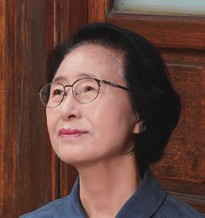
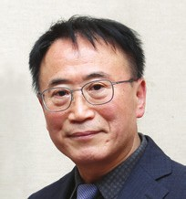

손끝의 온기로 피어난 빛나는 창작의 결실
안녕하세요.
갤러리 공간35 관장 신현희입니다.
자연의 고운 빛깔과 깊은 정성을 담아낸 「제1회 규방공예 민화대전」의 도록을 발간하고, 수록된 작품들을 한자리에 선보이게 되어 매우 뜻깊게 생각합니다.
이번 대전은 우리 전통 규방공예가 지닌 섬세한 아름다움과 예술적 가치를 민화라는 회화적 표현을 통해 새롭게 조명하고, 이를 글로벌 무대에 널리 알리고자 기획되었습니다. 조각보와 침선에 담긴 고유한 미감과 다채로운 색채를 민화로 재해석함으로써 전통문화의 가치를 되새기고, 예술적 표현의 새로운 가능성을 모색하고자 하였습니다. 나아가 한국 전통문화의 독창성과 아름다움이 글로벌 문화예술 교류를 통해 더 많은 이들과 공감하고 소통하며, 그 가치를 널리 인정받는 계기가 되기를 기대합니다.
이러한 취지 아래 작가님들은 규방공예의 아름다움을 저마다의 시선과 감성으로 화폭에 담아내어 전시의 깊이와 의미를 한층 더해주셨습니다. 한 작품 한 작품에 깃든 작가님들의 정성과 오랜 노력이 고스란히 전해져 깊은 감동을 느낍니다.
빛나는 창작의 결실로 수상의 영예를 안으신 작가님들께 진심 어린 축하를 전하며, 이번 전시와 도록을 준비하기까지 뜨거운 열정을 쏟아주신 모든 참여 작가님들께도 깊은 감사의 말씀을 드립니다. 작가님들의 손길 끝에서 피어난 예술적 온기는 이곳 갤러리 공간35를 한층 따뜻하고 풍요로운 예술의 공간으로 만들어 주었습니다.
이 한 권의 도록이 서로의 노고를 격려하고, 우리 전통문화와 예술이 지닌 아름다운 가치를 글로벌 무대에 널리 알리는 소중한 기록으로 오래도록 남기를 소망합니다. 아울러 전시를 찾아주시고 뜻깊은 여정에 함께해 주신 모든 관람객 여러분과 관계자분들의 가정에 늘 건강과 행복이 가득하시기를 진심으로 기원합니다.
감사합니다.

갤러리 공간35 관장 신현희
선과 색으로 잇는 규방의 미학
갤러리 공간35에서 제1회 규방공예 민화대전 수상작 전시를 열게 되어 매우 기쁩니다. 작품을 출품해 주신 모든 작가님께 감사드리며, 수상자 여러분께 진심으로 축하의 말씀을 드립니다.
규방은 우리 어머니와 할머니들이 바늘과 실로 삶을 엮던 곳이었습니다. 천 조각을 이어 만든 조각보, 한 땀 한 땀 수놓은 주머니와 노리개에는 가족의 평안과 복을 비는 마음이 담겨 있습니다. 이름 없는 여인들의 솜씨였지만, 그 색과 구성은 오늘날 현대미술에 견주어도 손색없는 아름다움을 지니고 있습니다.
이번 공모전은 규방공예의 미학을 민화의 선과 색으로 다시 해석하고, 전통 여성문화와 민화 예술을 창의적으로 넓히고자 마련되었습니다. 보자기, 조각보, 자수, 노리개, 주머니, 흉배 같은 규방 소품이 화폭 위에서 새롭게 태어났습니다. 바늘이 붓이 되고 실이 물감이 된 것입니다.
민화와 규방공예는 모두 이름 없는 사람들의 손에서 나와 생활 속에서 사랑받아 온 예술입니다. 길상(吉祥)의 염원을 담고 있다는 점, 화려하면서도 소박한 우리 고유의 색채 감각을 지녔다는 점도 같습니다. 이번 전시는 이 두 전통이 하나로 이어지는 뜻깊은 자리입니다. 출품작들은 전통을 옮기는 데 그치지 않았습니다. 오늘의 감성으로 새롭게 읽어 냈고, 바로 그 점이 이 공모전이 바라던 모습입니다.
이제 첫걸음을 내디뎠습니다. 이 공모전이 해마다 이어져 규방공예와 민화를 잇는 대표적인 창작의 장으로 자리 잡기를 기대합니다. 신진 작가의 등용문이 되고, 전통과 현대, 세대와 세대를 잇는 다리가 되기를 바랍니다. 나아가 규방문화의 가치를 널리 알리는 문화의 창으로 성장하기를 바랍니다.
수상자 여러분께서는 이번 수상을 새로운 출발점으로 삼아 더욱 깊은 작품 세계를 펼쳐 가시기 바랍니다. 애써 주신 심사위원님과 관계자 여러분, 그리고 찾아 주신 모든 분께 깊이 감사드립니다.
한 조각씩 이어 한 장의 조각보가 완성되듯, 오늘 모인 정성들이 우리 전통문화의 앞날을 환히 밝혀 주리라 믿습니다. 다시 한번 축하드립니다. 감사합니다.

현대민화연구소장 김용권